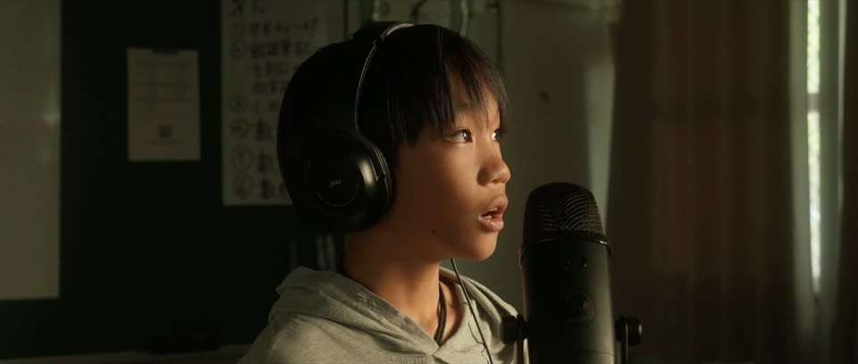
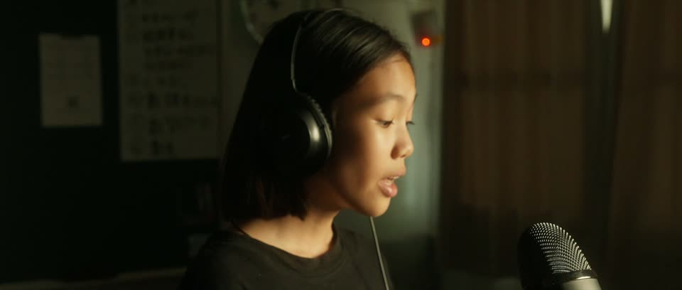

Tahidang 歌謠採集計畫115 年度原住民族歌謠採集典藏暨錄音人才培育計畫
2026.10.28 線上分享・19:30–20:30
古謠×未來式
分享人｜賴奕芸
臺東縣長濱鄉寧埔國民小學・Salimpo 阿美山海文化實驗小學
課程研發主任・古謠隊指導老師
← → 換頁 Space 播放／暫停 F 全螢幕
分享人
臺東縣長濱鄉寧埔國民小學
Salimpo 阿美山海文化實驗小學 課程研發主任
古謠隊指導老師
相關分享：2025 阿美族語言永續發展會議・阿美族歌謠與族語教學專題討論
Radiw o rayray niyam
展演之後收到老師、家人、耆老的回饋，再回到田調與練唱，這條路會一直循環。
溯源與挖掘・吟唱詞・文化脈絡・多元紀錄
先回到部落，找出歌從哪裡來、誰在唱、在什麼場合唱。我們挑過永福 Mornos、烏石鼻 Cidatayay 的歌謠。出處一定要先問清楚。
內化與理解・共同理解・唱法模擬
最花時間，也最不能省。孩子一直聽、一直模仿唱法，把古調唱進身體裡。少了這一步，寫出來的只會是「有族語歌詞的流行歌」。
從仿作到新作・吟唱詞
在古調的節奏、風格、旋律上，放進新的唱法、歌詞與故事。可以整首沿用古調旋律、只取其中一句發展，也可以用吟唱詞寫新段落。
| 作品 | 取材 | 取用方式 |
|---|---|---|
| 生活的詩 | 永福 Mornos 生活歌謠 | 整首 |
| 下雨了 Ma'orad to | 烏石鼻 Cidatayay 祈雨歌 | 其中一句 |
| 阿美族的族服 | — | 吟唱詞創作 |
| 閱讀 Tilid | — | 吟唱詞創作 |
看案例：
整合
錄音、做歌詞本、出專輯，再把歌印進書裡。被記錄下來，孩子才會覺得「這是我們的作品」。
文化的詮釋者
比賽、演出、和其他學校交流。站上舞台的那一刻，孩子從文化的學習者，變成文化的詮釋者與分享者。
記錄出版
O 'olic no 'orip生活的詩・寧埔國小阿美歌謠集
寧埔阿美古謠隊・2024 發行・共 10 首
古調的特色
採譜的歌詞對位為自動推估，待族人聽校。
取用古調
越前面，從古調拿得越多；越後面，拿得越少、自己寫得越多。
不管哪一個層次，兩件事不變：耳朵要先有古調，出處要先問清楚。
共創現場・O 'olic no 'orip 生活的詩
曲｜馬樂 Madal、寧埔阿美古謠隊
案例一・仿古調創作
詞｜馬樂 Madal 曲｜馬樂 Madal、寧埔阿美古謠隊
按版本切換時，會停在同一個段落繼續播；鍵盤 1–4 也可以切換。
準備音檔中…
展演交流
O 'olic no 'orip・歌詞
O malalokay a tamdaw no 'Amis勤勞的阿美族人
i riyar｜在海邊
海邊動詞依歌詞中譯的順序對照。
i lotok｜在山上
O fenek no 'Amis i 'orip這是阿美族人生活的智慧
O inanengay a tamdaw no 'Amis認真的阿美族人
和人往來
照顧家庭
O ma'araway i kalo'orip no 'Amis這是阿美族人生活的日常
出一題，請大家在聊天室回答，再按答案揭曉。
Mi'adop
案例三・只取一句
詞曲｜馬樂 Madal
Angongay aheytay開頭一句，取自祈雨歌
O maan kora soni?那是什麼聲音呢？
O~ posi ato waco'~原來是貓跟狗啊
Myaw~ sanay~喵喵喵這樣叫
Aw~ ko waco' a milaop狗汪汪叫著追
O hay ya o hoy yan, hey ya hay yan, ho hay yan新寫的吟唱詞
案例四・拆成素材
2024.12.30 創作錄音・2026.05.02 首演・115 學年度鄉土歌謠分區賽優等
Tadamaanay ko 'edil no cidal太陽的光芒很壯麗
O Pacidal a ngasaw kami我們是太陽氏族
Macidal anini a romi'ad副歌：今天是陽光普照的日子
Na lu wan na lu wan, hoi yan副歌後接的吟唱詞
同一段旋律，換一套詞
詞｜馬樂 Madal 曲｜馬樂 Madal、寧埔阿美古謠隊
Intro（20 秒）A 男性的族服B 女性的族服吟唱詞Inter（20 秒）C Bridge吟唱詞
fongoh ci'atapal, li'el ci'asa,頭戴男性頭飾、脖子戴頸鍊
o langdaway anca kohetingay a kipin, ato citafolod身穿藍色或黑色的上衣和著情人袋
o tapad anca kayap i laeno no fa'inayan,男性下身著彩色片褲或繡花短裙
o romaroma a niyaro' nga'ay to ci inapir, tefoy, singsing.在不同的部落有的可以配戴織布腰帶、臀擺、臀鈴等
fongoh ciopih, li'el cicangaw,頭戴白羽毛頭飾、脖子戴項鍊
o kohecalay anca kohetingay a kipin, ato citafolod身穿白色或黑色的上衣著情人袋
o palawlawan ato talakes i laeno no fafahiyan,女性下身著刺繡長裙和綁腿
o romaroma a niyaro' nga'ay to ci arosaysay, fiting, lilit.在不同的部落有的可以配戴彩珠披肩、耳環、髮髻等
粉色是男女兩段換掉的詞，其餘句型完全相同。
O losid no 'Amis, mafana' to kita a misanga'／a cilosid／a somowal我們學會了怎麼製作／怎麼穿著／怎麼說明
O losid no 'Amis, o taneng no to'as no mita是我們祖先的智慧
記錄出版・MV


O losid no 'Amis, mafana' to kita a misanga'／a cilosid／a somowal我們學會了怎麼製作／怎麼穿著／怎麼說明
O losid no 'Amis, o taneng no to'as no mita是我們祖先的智慧
案例二・吟唱詞創作
音樂輔助記憶：利用歌謠的固定旋律，強化正確的阿美語發音模式。
詞曲｜馬樂 Madal
A~ mafokil! A~ Mafana'! A~ Aka kaliyang!~ A~
啊！不會啦！啊！知道啦！啊！不要倔強！啊！
E~ 'Eminen! E~ 'Edefen! E~ Ma'edeng to! E~
痾！全部啦！痾！整個啦！痾！夠了啦！痾！
I~ icowa? I~ Itiraw! I~ Itini hani!~ I~
咦？在哪裡？咦？在那裡！咦？在這裡啦！咦？
O~ O 'orip! O~ O 'olic! O~ O sowal ato tilid no mita! Anaya!
喔！是生活！喔！是詩詞！喔！是我們的語言和文字啦！唉唷威呀！
Tilid~ mafokilay kako閱讀～我還不是很會
Limsiw ho kako我還在練習
Anaya~ mafana' to kako唉唷威呀！我會了啦！
展演交流
文化的學習者文化的詮釋者文化的分享者
現場收音，含掌聲與環境聲。
走過的路
歌謠教學 × 語言學習
腦神經科學・記憶鞏固機制
歌就是教材・O 'olic no 'orip 生活的詩
Mifoting, misetik, mipacing, midamay, micekiw, milakelaw i riyar在海邊從事捕魚、捕漁獵、潛水射魚、採集海菜、採集螺貝類、夜間採集
Mi'adop, mikasoy, mi'aol, midateng, midongec, mima'omah i lotok在山上從事打獵、伐木取材、採竹、採野菜、採藤心、整理田地
O fenek no 'Amis i 'orip這是阿美族人生活的智慧
O demak no 'Amis, ira ko karorayan ato kaacangan,阿美族的事務，有勞路艱辛也有千歡萬喜
歌詞與中譯出自《生活的詩》專輯歌詞本；［屬］［主］沿用原簡報的標記方式。
Radiwen ko radiw ita,
sowalen ko sowal ita!
透過歌謠創造自然的語言使用環境，讓族語在文化脈絡中活起來，成為族語復振的永續力量。
Aray! 謝謝大家・Q&A